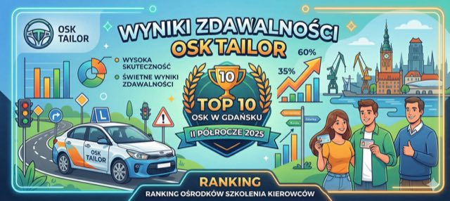
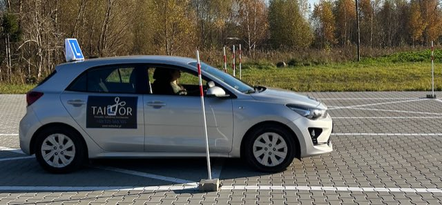

Ile kosztuje prawo jazdy w Gdańsku? Ceny w III kwartale 2026
Barometr cen kursów kat. B w gdańskich szkołach jazdy, opłaty dodatkowe i zdawalność w PORD.
Tu rozwiewamy wątpliwości, analizujemy statystyki i przygotowujemy Cię do roli kierowcy, nie tylko od strony technicznej. To miejsce, w którym teoria spotyka się z gdańską praktyką drogową i realiami egzaminu.
12 wpisów, od najnowszego
Barometr cen kursów kat. B w gdańskich szkołach jazdy, opłaty dodatkowe i zdawalność w PORD.
Nasza wizytówka w lokalnym katalogu firm i prośba o Twoją opinię.
Sprawdź ceny kursów prawa jazdy kat. B w Gdańsku. Porównujemy kursy kat. B manual oraz automat oraz jazdy doszkalające w 2026 roku.

Jesteśmy w TOP 10 zdawalności - zapisz się. OSK Tailor Gdańsk w czołówce rankingu PORD Gdańsk za II półrocze 2025 r.

Prawo jazdy w ciąży w Gdańsku – sprawdź, czy można bezpiecznie uczyć się jazdy, kiedy warto zacząć kurs i dlaczego OSK Tailor to dobry wybór.

OSK Tailor Nauka Jazdy Gdańsk dba o bezpieczeństwo osób niepełnoletnich Poznaj Standardy Ochrony Małoletnich obowiązujące w naszym ośrodku.

OSK Tailor Nauka Jazdy Gdańsk – prawo jazdy od 17 lat. Sprawdź zasady, ograniczenia, okres próbny i przygotuj się do bezpiecznej jazdy.
Syntetyczna informacja o zajęciach z pierwszej pomocy w szkole nauki jazdy OSK Tailor Nauka Jazdy Gdańsk. Info. dla przyszłych kierowców.

Zapisz się na kurs prawa jazdy Gdańsk w OSK Tailor i poznaj gdańskie ulice z doświadczonymi instruktorami.
Zdaj egzamin na prawo jazdy kat. B automat z OSK Tailor. Przekonaj się, jak łatwo można nauczyć się jeździć!

Kurs prawa jazdy kat. B w Gdańsku z OSK Tailor Gdańsk to dobre szkolenie oraz skuteczne przygotowanie do egzaminu państwowego w PORD.
Kurs prawa jazdy kat. B w OSK Tailor Nauka Jazdy Gdańsk. Spokojna nauka, indywidualne podejście oraz skuteczne przygotowanie do egzaminu.
Świadomy kierowca to bezpieczny kierowca. Artykuły piszemy na podstawie wieloletniego doświadczenia instruktorskiego i codziennych obserwacji ruchu w Gdańsku, żeby pomóc Ci zdać egzamin, a potem pewnie jeździć.
Analizujemy dane z PORD Gdańsk: co sprawia kursantom największą trudność i jak odebrać prawko już po pierwszym podejściu.
Ranking zdawalności PORDNa przykład kurs prawa jazdy w ciąży: przepisy, komfort, bezpieczeństwo i najlepszy moment na zapis.
Prawo jazdy w ciążyPorównujemy skrzynie biegów i pokazujemy, dlaczego dla wielu osób automat to najkrótsza droga do spokojnej jazdy po mieście.
Kurs na automatSamochody, na których będziesz się uczyć, żeby na egzaminie w PORD wnętrze auta było Ci dobrze znane.
Od eco-drivingu przez parkowanie w ciasnych uliczkach Wrzeszcza po radzenie sobie ze stresem egzaminacyjnym.
Zapisz się online albo zadzwoń do biura. Pomożemy dobrać termin i skrzynię biegów.